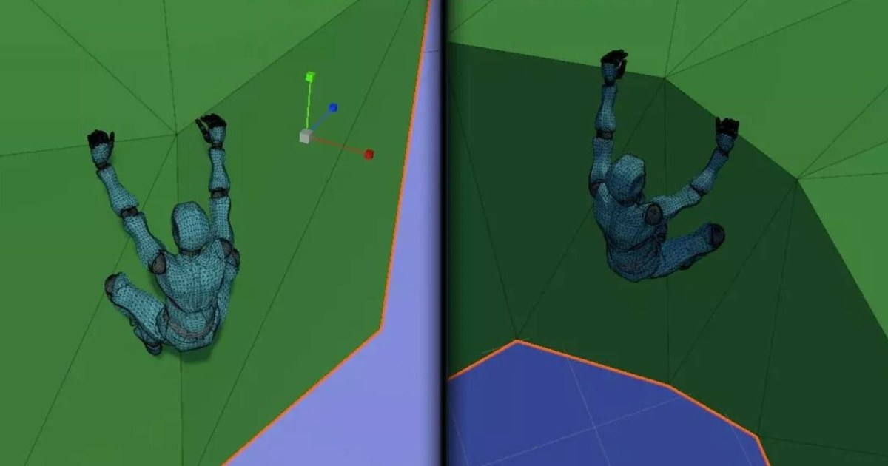

遊戲引擎美術：Advanced Ledge Detection & Trave 的製作重點
技術重點：來源主題為「遊戲引擎美術：Advanced Ledge Detection & Trave 的製作重點」，目前可確認的製作面向包含 動畫、Unity；來源題名線索「Advanced…For Unity」 Production 檢查點為 動畫、Unity；先以來源已公開的功能、流程與限制為準，不補寫未公開的效能或工時數字。

完整分析
技術／流程變更
「遊戲引擎美術：Advanced Ledge Detection & Trave 的製作重點」的公開資訊明確涉及 動畫、Unity。來源描述為：來源主題為「遊戲引擎美術：Advanced Ledge Detection & Trave 的製作重點」，目前可確認的製作面向包含 動畫、Unity；來源題名線索「Advanced…For Unity」 技術判讀以這些已公開內容為界，不把標題之外的功能或結果自行補成既定事實。
Production 影響
來源主題 遊戲引擎美術：Advanced Ledge Detection & Trave 的製作重點 的可驗證內容提到 來源主題為「遊戲引擎美術：Advanced Ledge Detection & Trave 的製作重點」，目前可確認的製作面向包含 動畫、Unity；來源題名線索「Advanced…For Unity」。對 Unity，可把 動畫、Unity 放進目前相同製作環節做小規模對照，確認它實際解決的是 authoring、交換、品質控制還是 runtime 問題，再決定導入範圍。
導入測試與限制
「遊戲引擎美術：Advanced Ledge Detection & Trave 的製作重點」目前可驗證的來源內容為 來源主題為「遊戲引擎美術：Advanced Ledge Detection & Trave 的製作重點」，目前可確認的製作面向包含 動畫、Unity；來源題名線索「Advanced…For Unity」。來源沒有提供的 benchmark、工時節省或品質提升不做推定；正式導入前仍要用目標 DCC／引擎版本、代表性資產與實際輸出格式驗證相容性與可重現性。
BRIEF｜來源已驗證；證據深度較有限，完整分析會明確區分已知資訊與待驗證事項。